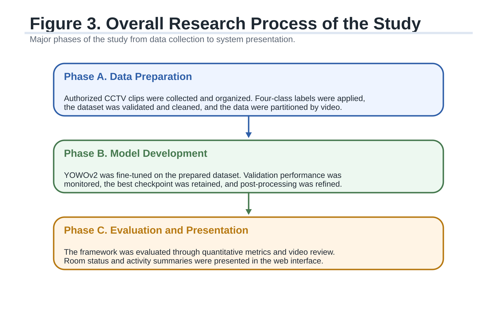

Live Sample
Project demo
This page uses sample records so the project can be tested online without a private database.

Switch Project
Jump between live samples.
Each link opens a public sample-data version of the project.
Sample Data Workspace
Use the project with sample data.
This live sample runs in the browser and uses safe sample records prepared for the portfolio.